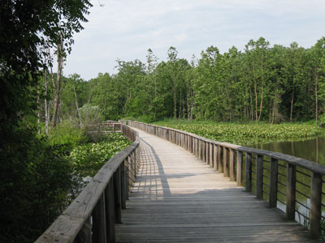
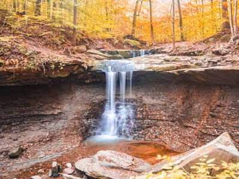
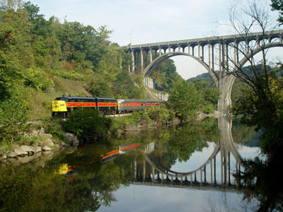
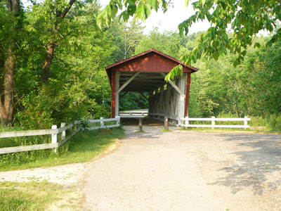
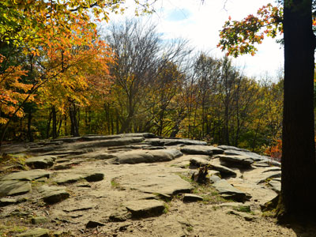
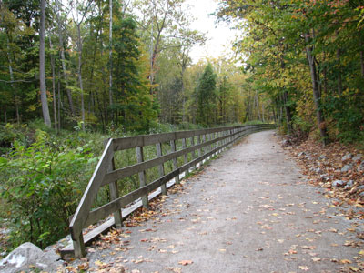
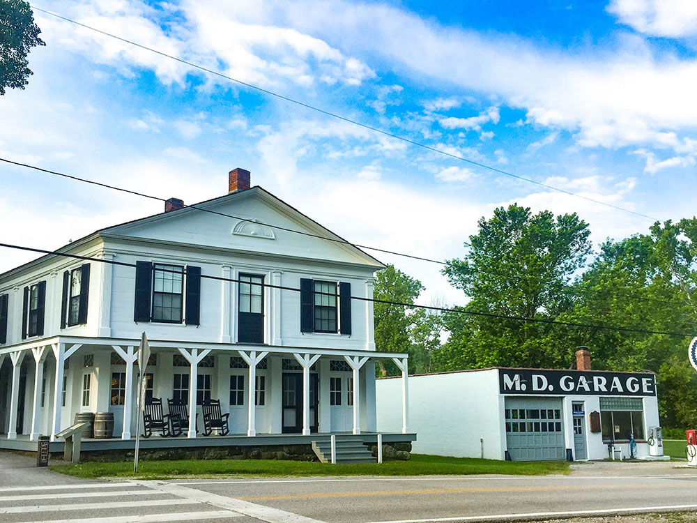
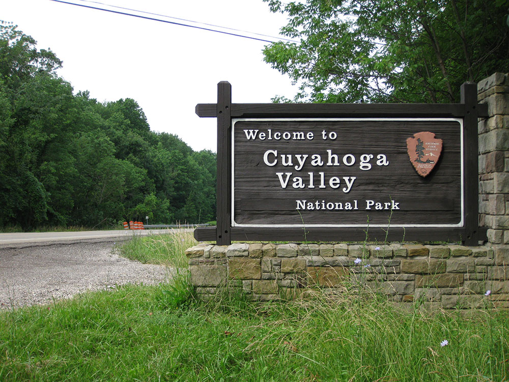

-400.jpg)
.jpg){kind=link}
Cuyahoga Valley National Park Travel Guide
National park with natural areas include forests, rolling hills, narrow ravines, wetlands, rivers, and about 100 waterfalls with the most popular being the 65-foot tall Brandywine Falls—the tallest waterfall in the park and the tallest in Northeast Ohio
General Information
Some areas close at dusk, including trailheads and parking lots
Visitor centers have seasonal hours
No entrance pass required
How to Get There
From Cleveland, OH (20 mi): Take I-77 S to Miller Rd in Richfield, then follow Riverview Rd south into the park; visitor centers and trailheads are well-marked along the route.
Overview
Cuyahoga Valley National Park preserves and restores a rural landscape along the Cuyahoga River between Cleveland and Akron in northeastern Ohio. It is the only national park in Ohio, and it weaves together National Park Service land with county parks, farms, villages, and private attractions in a way unlike any other national park. The valley's forests, ravines, and wetlands hold about 100 waterfalls, including the 65-foot Brandywine Falls, the tallest in the park. The Ohio and Erie Canal, built in the 1820s, once carried goods through the valley and now supports a popular towpath trail.
The area was designated a national recreation area in 1974 and a national park in 2000, the only park in the system to have made that transition. It is popular because it is close to millions of people, offering green space, hiking, biking, scenery, and history within a short drive of Cleveland and Akron. Visitors come to hike to waterfalls, bike the Towpath Trail, ride the scenic railroad, visit historic farms and canal sites, and see the fall colors.
Park Sections
The park runs about 22 miles along the river and is usually thought of in three parts. In the north, near Independence and Valley View, are the Canal Exploration Center and the trails along the river and canal. The central part, around Brecksville, Boston Heights, and Peninsula, has the Boston Mill Visitor Center, Brandywine Falls, Hale Farm and Village, Everett Covered Bridge, and the Ledges, and it is the busiest area. In the south, near Peninsula and Akron, are Hunt Farm, farms and villages, and the Towpath Trail's southern stretch. Roads such as Riverview Road, Akron-Peninsula Road, and Brecksville Road connect them.
Sightseeing and Exploring the Park
Riverview Road, State Route 303, and Akron-Peninsula Road offer scenic drives through the valley, with views of farms, forests, and the river. Stops include the Brandywine Falls boardwalk and overlooks, the Everett Covered Bridge, the Boston Mill Visitor Center, and the villages of Peninsula and Boston. The Cuyahoga Valley Scenic Railroad runs along the river on excursions through the valley, which is especially popular in fall. Many sights are small, and the best way to see them is to combine a drive with short walks.
Hiking
The park has more than 125 miles of trails. The Ohio and Erie Canal Towpath Trail, a flat 20-mile path that follows the former canal, is the park's spine and is used by walkers and bicyclists. The Ledges Trail (about 2.2 miles) winds through sandstone boulders and caves, the Brandywine Gorge Trail (about 1.5 miles) goes to Brandywine Falls, and the Blue Hen Falls and Bridal Veil Falls trails are short walks to waterfalls. The Beaver Marsh boardwalk is an easy walk through wetlands, and the Buckeye Trail crosses the park. Most trails are moderate.
Other Activities
The park is known for activities beyond hiking. Bicycling on the Towpath Trail is popular, and the "Bike Aboard!" program lets riders take the scenic railroad one way. Winter brings skiing and snowboarding at Boston Mills and Brandywine ski areas, and snowshoeing. Other activities include ranger programs, kayaking, fishing, golf, and horseback riding. The park hosts concerts and theater at venues such as Blossom Music Center, home of the Cleveland Orchestra in summer, and the Hale Farm and Village is a living-history museum with craft demonstrations. There are no cave tours, but the Ledges has rock caves.
Flora and Wildlife
The park's forests of oak, maple, beech, and hickory turn colorful in October, and wildflowers bloom in spring along the trails and ravines. Wetlands such as Beaver Marsh, created by beavers, are home to herons, turtles, and muskrats. Wildlife includes white-tailed deer, coyotes, beavers, river otters, red foxes, and more than 240 bird species, with a great blue heron rookery and nesting bald eagles. Barred owls and pileated woodpeckers live in the woods. Viewing is on your own, and dawn and dusk are best, with ranger-led walks available.
Access
The park lies between Cleveland and Akron, about 20 miles south of downtown Cleveland and 15 miles north of downtown Akron. It is reached from I-77, I-271, and Ohio Routes 8 and 21 and Riverview Road. Cleveland Hopkins International Airport is about 30 to 40 minutes away, and Akron-Canton Airport is about 40 minutes. The Cuyahoga Valley Scenic Railroad provides train service through the park, with stops at several trailheads, and Akron and Cleveland have bus service. Most visitors arrive by car.
Seasons
The park is open all year. Spring brings wildflowers and strong waterfalls after rain, though trails can be muddy. Summer is warm and humid, with the most visitors, and concerts at Blossom. Fall is the favorite season, with colorful foliage, especially in October, and the scenic railroad runs special trips. In winter the waterfalls may freeze, and the park offers snowshoeing, cross-country skiing, and downhill skiing. Some facilities, such as the Canal Exploration Center, have seasonal hours, and flooding can close parts of the Towpath Trail.
Camping and Lodging
The park has no campground, but camping is available at private campgrounds and state parks within about an hour. Lodging inside the park includes the Stanford House, a restored 1830s farmhouse with nine bedrooms that offers overnight stays, and the Inn at Brandywine Falls, a bed-and-breakfast near the falls. Nearby, the villages of Peninsula and Hudson have inns, and Richfield, Brecksville, and Akron have chain hotels. Cleveland, about 30 minutes north, has a wide range of hotels.
Visitor Centers
The park has several visitor centers. The Boston Mill Visitor Center is the main one, with exhibits, a film, a bookstore, and information on trails and the scenic railroad. The Canal Exploration Center in Valley View focuses on the canal's history and has a lock outside. The Hunt Farm Visitor Information Center in the south offers information and exhibits on the area's farming history, and the Happy Days Visitor Center in Virginia Kendall Park has exhibits on the Civilian Conservation Corps. Hours vary by season, so check the National Park Service website.
Exhibits related to the Ohio and Erie Canal history are available at the Canal Exploration Center. The exhibits are housed in a renovated canal-era tavern that had such a colorful reputation that it was called "Hell's Half Acre." Lock 38 is located in the front.
The Ohio and Erie Canal was constructed between 1825 and 1832, providing Ohio with a transportation system that permitted residents to conduct trade with the world. While it stopped functioning after the Great Flood of 1913, remnants and ruins of canal-related structures can be seen alongside the Ohio and Erie Canal Towpath Trail. Wayside exhibits explain the function of many of the structures visible from the trail.
The Frazee House was under construction in 1825 when the canal was dug through its front yard. The house was built in the Western Reserve architectural style.
This early canal-era building was owned by the Boston Land and Manufacturing Company. The store has numerous canal boat-building exhibits.
The Peninsula Depot of the Cuyahoga Valley Scenic Railroad (CVSR) is located on West Mill Street in the village of Peninsula. The depot was originally in the village of Boston, but was moved to Peninsula in the late 1960s. The building may be the only surviving combination station from the Valley Railway, which operated between Cleveland and Tuscarawas County in the late 19th century. The depot is an operating station for CVSR train rides.
The Everett Covered Bridge—the only covered bridge in Summit County—was constructed after a local resident was killed attempting to cross the swollen Furnace Run in 1877. The bridge was destroyed by storm floodwaters in 1975 and reconstructed by the National Park Service in 1986. The bridge is located on Everett Road about 1/2 mile (800 m) west of Riverview Road near Everett Village.
Brandywine Village was conceived and founded by George Wallace, who built a sawmill next to Brandywine Falls in 1814. He encouraged others to move to the area, including his brother-in-law, who built a grist mill on the opposite side of the falls. With inexpensive land available and the presence of mills to provide lumber, flour, and corn meal, Brandywine Village began to grow. A couple of buildings remain from the village, and historic photos and remnants of building foundations can also be seen.
The Civilian Conservation Corps was responsible for the construction of several structures in the valley. Happy Days Lodge and the shelters at the Ledges, Octagon, and Kendall Lake were built of American chestnut in the late 1930s. All four structures are in the Virginia Kendall Unit of the park.
James Stanford moved to Boston Township immediately after surveying and naming it in 1806. He and his wife Polly and son George were the first homesteaders in what is today Cuyahoga Valley National Park. His son George built the stately Greek revival home in about 1830. The house accommodates meetings and retreats as a day-use facility, and tourists as a moderately priced overnight facility with nine bedrooms. The house had previously served as a youth hostel.
Hale Farm and Village is an outdoor living history museum. Costumed interpreters describe life in the Western Reserve. The village features 21 historic buildings and many talented craftspeople. The site is operated by the Western Reserve Historical Society. Craft demonstrations include glassblowing, candlemaking, broommaking, spinning and weaving, cheesemaking, blacksmithing, woodworking, sawmilling, hearth cooking, and pottery making. The farm also has oxen, sheep, cows, and gardens.
This article uses material from the Wikipedia article "Cuyahoga Valley National Park", which is released under the Creative Commons Attribution-Share-Alike License 3.0. Additional information comes from the National Park Service Cuyahoga Valley National Park website.
Featured Locations and Trails

David Fulmer, CC BY 2.0, via Wikimedia Commons; Image Size Adjusted

Beaver Marsh
Wetland habitat featuring a boardwalk trail where visitors can observe diverse wildlife including birds, amphibians, and aquatic mammals throughout the year.
Wetland habitat featuring a boardwalk trail where visitors can observe diverse wildlife including birds, amphibians, and aquatic mammals throughout the year.

Erik Drost, CC BY 2.0, via Wikimedia Commons; Image Size Adjusted
.jpg){kind=link}
Blue Hen Falls
Scenic 15-foot waterfall cascading over a sandstone ledge into a shallow pool, accessible via a moderately challenging forest trail.
Scenic 15-foot waterfall cascading over a sandstone ledge into a shallow pool, accessible via a moderately challenging forest trail.
Boston Mill Visitor Center
Interactive exhibits, historic architecture, and park information services housed in a restored early 20th-century company store.

Erik Drost, CC BY 2.0, via Wikimedia Commons; Image Size Adjusted
Brandywine Falls
Dramatic 60-foot waterfall plunging over layered sandstone and shale cliffs, accessible via a short boardwalk and loop trail through forested gorge terrain.
Dramatic 60-foot waterfall plunging over layered sandstone and shale cliffs, accessible via a short boardwalk and loop trail through forested gorge terrain.
Bridal Veil Falls
Graceful 20-foot cascade flowing over tiered shale ledges, reached by a short forest trail and boardwalk along Deerlick Creek.
Graceful 20-foot cascade flowing over tiered shale ledges, reached by a short forest trail and boardwalk along Deerlick Creek.
Canal Exploration Center
Historic building featuring interactive exhibits on canal-era transportation, commerce, and daily life, with a restored lock and Towpath Trail access nearby.

National Archives and Records Administration, Public domain, via Wikimedia Commons; Image Size Adjusted

Cuyahoga Valley Scenic Railroad
Vintage railcars offering scenic excursions through forested landscapes, historic towns, and river valleys with seasonal programs and themed rides.

jskuya, CC BY-SA 3.0, via Wikimedia Commons; Image Size Adjusted

Everett Covered Bridge
Historic wooden bridge spanning Furnace Run, offering access to hiking and equestrian trails in a scenic forested setting.
Historic wooden bridge spanning Furnace Run, offering access to hiking and equestrian trails in a scenic forested setting.

Erik Drost, CC BY 2.0, via Wikimedia Commons; Image Size Adjusted
.jpg){kind=link}
Ledges Trail
Loop trail winding through dramatic sandstone cliffs, mossy boulders, and forested terrain with a scenic overlook and seasonal wildflowers.
Loop trail winding through dramatic sandstone cliffs, mossy boulders, and forested terrain with a scenic overlook and seasonal wildflowers.

Kevin Payravi, CC BY-SA 3.0, via Wikimedia Commons; Image Size Adjusted

Ohio and Erie Canal Towpath
Historic multi-use trail following a former canal towpath with flat, accessible terrain ideal for walking, biking, and wildlife observation.
Historic multi-use trail following a former canal towpath with flat, accessible terrain ideal for walking, biking, and wildlife observation.

.jpg){kind=link}
